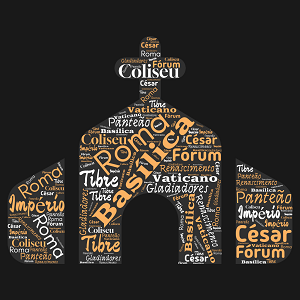

Roma, capital da Itália, é uma cidade histórica e fascinante, conhecida por seus monumentos icônicos como o Coliseu e o Panteão. Fundada há mais de 2.700 anos, foi o centro do Império Romano e abriga o Vaticano, sede da Igreja Católica. Suas ruas combinam o antigo e o moderno, oferecendo uma rica experiência cultural e gastronômica, atraindo visitantes de todo o mundo.
🌞⛅ Em Roma, um turista 🍝 pediu um prato gigante de macarrão 🍽️. Quando chegou, o prato era tão grande que ele precisou de uma colher 🥄 e um garfo 🍴 enormes! Enquanto comia, ele tropeçou e derrubou espaguete em todo o Coliseu 🏛️! Os pombos 🕊️ acharam que era uma festa e começaram a comer também! Todos riram 😂 e o turista virou uma lenda em Roma!
Em Roma, um turista pediu um prato gigante de macarrão. Quando chegou, o prato era tão grande que ele precisou de uma colher e um garfo enormes! Enquanto comia, ele tropeçou e derrubou espaguete em todo o Coliseu! Os pombos acharam que era uma festa e começaram a comer também! Todos riram e o turista virou uma lenda em Roma!
Em Roma, um turista pediu um prato gigante de macarrão. Quando chegou, o prato era tão grande que ele precisou de uma colher e um garfo enormes! Enquanto comia, ele tropeçou e derrubou espaguete em todo o Coliseu! Os pombos acharam que era uma festa e começaram a comer também! Todos riram e o turista virou uma lenda em Roma!
Neste site temos a pagina inicial (esta) em que estou a falar sobre a cidade e a contar uma historia, depois vou ter a pagina da localização em que vou ter no mapa a localização da cidade, depois tenho Multimedia em que vou ter fotografias da cidade e depois tenho a informação que irá terinformação da mesma.
